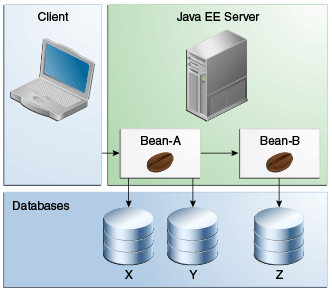
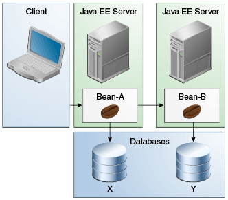

|
Plataforma Java, Edición Empresarial (Java EE) 8 El Tutorial de Java EE |
| Anterior | Siguiente | Contenidos |
El administrador de transacciones Java EE controla todas las transacciones de enterprise beans excepto las transacciones JDBC administradas por beans. El administrador de transacciones Java EE permite que un enterprise bean actualice múltiples bases de datos dentro de una transacción. La Figura 54-2 y la Figura 54-3 muestran dos escenarios para actualizar varias bases de datos en una sola transacción.
En la Figura 54-2, el cliente invoca un método de negocio en
Bean-A. El método de negocio comienza una transacción, actualiza la base de datos X,
actualiza la base de datos Y e invoca un método de negocio en Bean-B. El segundo
método de negocio actualiza la base de datos Z y devuelve el control al método de negocio en
Bean-A, que confirma la transacción. Las tres actualizaciones de la base de datos
ocurren en la misma transacción.
En la Figura 54-3, el cliente llama a un método de negocio en
Bean-A, que inicia una transacción y actualiza la base de datos X. Luego,
Bean-A invoca un método en Bean-B, que reside en un servidor Java EE
remoto. El método en Bean-B actualiza la base de datos Y. Los administradores de
transacciones de los servidores Java EE aseguran que ambas bases de datos se actualicen en la
misma transacción.


| Anterior | Siguiente | Contenidos |